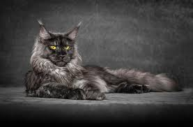
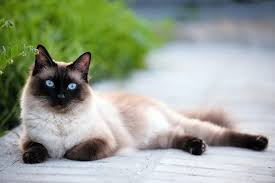
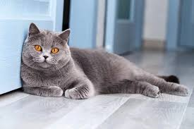
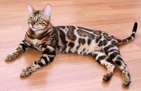
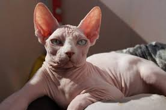

Мейн-кун: Ніжний велетень або «кіт-собака»
Ці коти вражають своїми королівськими розмірами, довгими пензликами на вухах та розкішною шерстю, яка захищає їх від холодів. Мейн-куни отримали прізвисько «коти-собаки» через свою звичку ходити хвостиком за господарем та здатність навчатися командам (наприклад, приносити іграшки).
Кому підійде: Сім'ям із дітьми та іншими домашніми тваринами. Вони обожнюють відкритий простір, легко звикають до прогулянок на повідку та дуже лояльні до малечі, ніколи не виявляючи безпідставної агресії.

Сіамська кішка: Граційна та харизматична екстравертка
Сіамські коти відомі своїм легендарним забарвленням колор-поінт (світле тіло та темні лапки, вуха, мордочка) і кришталево-блакитними мигдалеподібними очима. Це одна з найдавніших та найрозумніших порід на планеті. Вони мають неймовірно гнучке тіло та витончену мускулатуру.
Кому підійде: Людині, яка шукає постійного компаньйона та готова приділяти вихованцю багато часу. Сіамці не терплять самотності, дуже ревниві і будуть голосно «коментувати» кожну вашу дію своїм характерним глибоким голосом.

Британська короткошерста: Плюшевий аристократ
Британці володіють міцною статурою, круглою мордочкою з виразними щоками та неймовірно густою «плюшевою» шерстю з підшерстям. Класичним вважається блакитне (сіре) забарвлення. Це спокійні, самодостатні коти, які сповнені власної гідності.
Кому підійде: Зайнятим людям та перфекціоністам. Вони спокійно переносять тривалу відсутність господаря, не схильні шкодити вдома та ідеально поважають особисті кордони.

Бенгальська кішка: Маленький леопард із ніжним серцем
Бенгали з'явилися внаслідок схрещування дикої азійської леопардової кішки з домашньою. Вони успадкували унікальний екзотичний плямистий або мармуровий малюнок та дивовижний «глітер» — ефект, коли шерсть виблискує під сонячними променями золотом. Попри дикий вигляд, генетична агресія у них повністю відсутня.
Кому підійде: Активним людям. \Бенгалам потрібні щоденні фізичні навантаження, бігові колеса та високі ігрові комплекси. Вони обожнюють воду, із задоволенням приймають ванну разом із господарем та вміють високо стрибати.

Канадський сфінкс: Іншопланетне диво та джерело тепла
Головна особливість сфінксів — повна відсутність класичної шерсті. Їхня шкіра на дотик нагадує гарячий оксамитовий персик. Через специфіку терморегуляції температура їхнього тіла трохи вища, ніж у інших котів. Вони мають великі вуха-локатори та неймовірно розумний, пронизливий погляд.
Кому підійде: Любителям екзотики та палких обіймів. Сфінкси абсолютно позбавлені котячої незалежності, вони постійно шукають людського тепла, лізуть під ковдру і обожнюють сидіти на плечах у господаря.